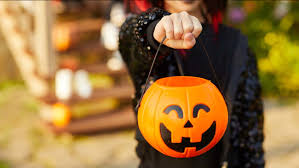

How To celebrate
Halloween activities include trick-or-treating (or the related guising and souling), attending Halloween costume parties, carving pumpkins into jack-o'-lanterns, lighting bonfires, apple bobbing, divination games, playing pranks, visiting haunted attractions, telling scary stories, as well as watching horror films.[21] In many parts of the world, the Christian religious observances of All Hallows' Eve, including attending church services and lighting candles on the graves of the dead, remain popular,[22][23][24] although elsewhere it is a more commercial and secular celebration.[25][26][27] Some Christians historically abstained from meat on All Hallows' Eve, a tradition reflected in the eating of certain vegetarian foods on this vigil day, including apples, potato pancakes, and soul cakes.[28][29][3
